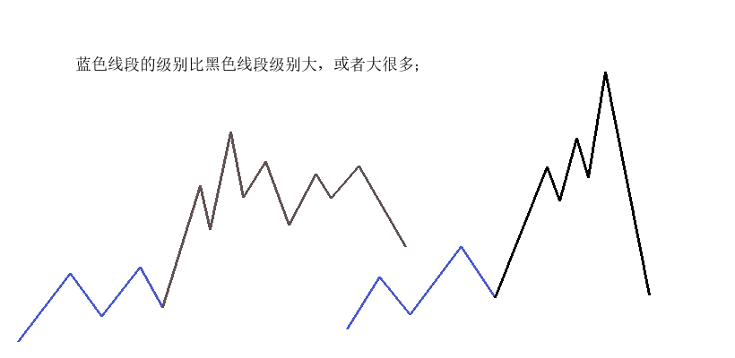
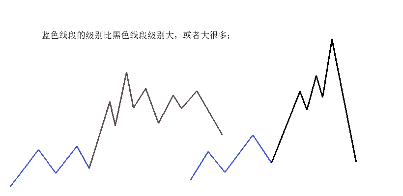

Kill-GFW
XX-Net tools
- https://github.com/XX-net/XX-Net
- https://github.com/yangyangwithgnu/hardseed
3.13.0 以上版本升级
-
启动之前远程打开管理功能(0.0.0.0:8085)，并打开0.0.0.0的8087端口
-
data/launcher/config.yaml的module：
- 修改allow_remote_connect: 1
- 增加control_ip: 0.0.0.0
-
data/launcher/config.json
-
{
"listen_ip": "0.0.0.0"
}
- 启动 …


 
